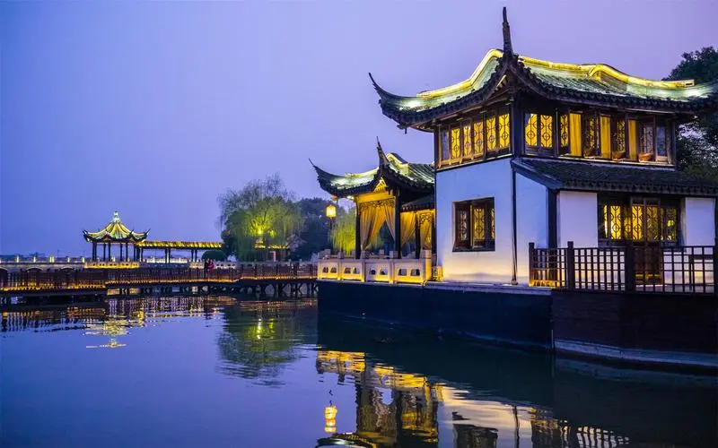

苏州市，简称“苏”，古称姑苏、平江，江苏省辖地级市，特大城市[189]，是上海大都市圈和苏锡常都市圈重要城市， 国务院批复确定的长江三角洲重要的中心城市之一、国家高新技术产业基地和风景旅游城市，位于华东地区、长江三角洲中部、江苏省东南部 ，东傍上海，南接浙江，西抱太湖，北依长江。
苏州是首批24座国家历史文化名城之一，著名的江南水乡，有“人间天堂”的美誉。苏州城始建于公元前514年，距今已有2500多年历史。公元589年，隋文帝取姑苏山之名将“吴郡”改为“苏州”。[166]苏州姑苏区为全国首个国家历史文化名城保护区。[191]从春秋伍子胥建阖闾大城至今，苏州城基本保持着“水陆并行、河街相邻”的双棋盘格局，以“小桥流水、粉墙黛瓦、史迹名园”为独特风貌。以拙政园、山塘街为代表的苏州古典园林和中国大运河苏州段被列为世界文化遗产，以周庄古镇为代表的江南水乡古镇被列入中国世界文化遗产预备名单， 太湖绝大部分景点分布在苏州境内。作为“江南文化”的核心载体，苏州孕育的昆曲、评弹、园林和苏绣，已成为世界辨识中国的鲜明符号。